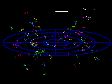
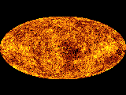
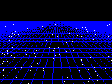
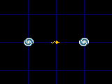
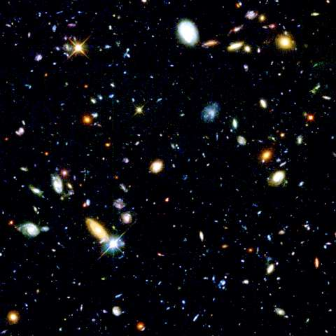
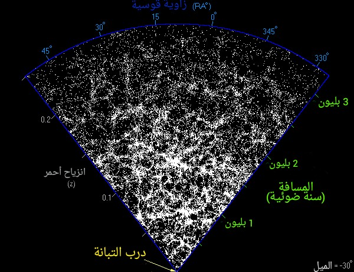

| عدد العناقيد المجرية الفائقة في الكون المرئي = 10 مليون |
| عدد مجموعات المجرات في الكون المرئي = 25 مليار |
| عدد المجرات الكبيرة في الكون المرئي = 350 مليار |
| عدد المجرات القزمة في الكون المرئي = 7 تريليون |
| عدد النجوم في الكون المرئي = 30 مليار تريليون (3x10²²) |
| خرائط إضافية | |
|---|---|
 |
تم رسم جزء من الكون حتى مسافة 2 مليار سنة ضوئية. هنا خريطة تظهر العديد من العناقيد المجرية الفائقة الرئيسية ضمن 2 مليار سنة ضوئية. |
 |
إذا نظرنا بعيدًا بما يكفي عبر الكون، يمكننا رؤية الوهج الخافت للانفجار العظيم من حولنا. تظهر هنا خريطة لإشعاع الخلفية الكونية الميكروية. |
| بيانات وفهارس | |
|---|---|
 |
هذه الصفحة هي شرح مختصر للانفجار العظيم وتوضح كيف يتوسع الكون ولماذا لا يوجد مركز أو حافة للكون المتوسع. |
 |
ما هي بالضبط المسافة إلى حافة الكون المرئي؟ كيف تحدد المسافة في كون متوسع؟ تحاول هذه الصفحة الإجابة على هذا السؤال الصعب. |
يبدو أن الكون المرئي له نصف قطر يبلغ 14 مليار سنة ضوئية لأن عمر الكون حوالي 14 مليار سنة. الضوء من الأجسام الأبعد ببساطة لم يكن لديه الوقت للوصول إلينا. لهذا السبب، سيجد كل شخص في الكون نفسه في وسط الكون المرئي الخاص به. إن تحديد الحجم الدقيق للكون معقد بسبب حقيقة أن الكون يتوسع. المجرات التي نراها بالقرب من حافة الكون المرئي أطلقت ضوءها عندما كانت أقرب إلينا بكثير، والآن ستكون أبعد بكثير.
الحجم الحقيقي للكون ربما يكون أكبر بكثير من الكون المرئي. تشير هندسة الكون إلى أنه قد يكون له حجم لانهائي وأنه سيستمر في التوسع إلى الأبد. حتى إذا لم يكن الكون لانهائيًا، فإن كوننا المرئي يجب أن يكون نقطة صغيرة في كلية أكبر بكثير.

في ديسمبر 1995، تم توجيه تلسكوب هابل الفضائي نحو منطقة فارغة من السماء في كوكبة الدب الأكبر لمدة عشرة أيام. أنتج واحدة من أشهر الصور الفلكية في العصر الحديث - صورة حقل هابل العميق. يظهر هنا جزء منها. تقريبًا كل جسم في هذه الصورة هو مجرة تقع عادة على بعد 5 إلى 10 مليار سنة ضوئية. المجرات التي تم الكشف عنها هنا لها أشكال وألوان مختلفة، بعضها شاب وأزرق، بينما البعض الآخر قديم، أحمر وغباري. أنتج تلسكوب هابل الفضائي أيضًا صورتين مشابهتين: حقل هابل العميق الجنوبي في عام 1998 و حقل هابل فائق العمق في عام 2004.
عن طريق جمع المسافات إلى آلاف المجرات في شريط ضيق من السماء، يمكن إنتاج شريحة من الكون، مثل تلك الموضحة أدناه من مسح الانزياح الأحمر للمجرات 2dF والذي ينظر إلى الكون حتى مسافة 3.5 مليار سنة ضوئية، على الرغم من عدم جمع الكثير من البيانات للمجرات التي تبعد أكثر من 3 مليار سنة ضوئية. تُظهر هذه الأنواع من الرسوم البيانية كيف تتجمع المجرات في الكون، حتى على أكبر المقاييس. تم رسم حوالي 52 000 مجرة.
